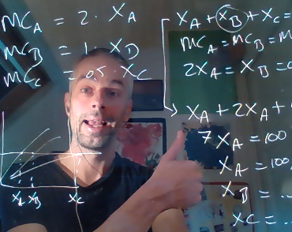

 I am an Associate Professor at the School of Business & Economics, Vrije Universiteit Amsterdam, a research Fellow at the Tinbergen Institute, and a faculty member at Amsterdam University College. I also organize #SWELL (Seminar in Water Economics onLLine) and I am the Editor-in-Chief of Water Resources & Economics.
My research is on cooperation and conflict in the management and conservation of water, nature and climate. I use a variety of research methods including tools and models from game theory, political economy, and experimental economics.
I teach both at Vrije Universiteit Amsterdam and Amsterdam University College. Courses include "Introduction to Economics", "Environmental Economics", "Economics of Environmental Policy Instrument Design", and "Grand Challenges for Sustainability".
Contact me:
VU Main Building, Office 9A-92 [route description]
Email: erik.ansink@vu.nl
My recent publications and working papers are listed below. Please email me if you do not have access. Download my publication list or see my Google Scholar page for a complete overview of my publications.
"Crowdfunding conservation (and other public goods)"
[Published version]
[Ungated version]
[Replication files]
"No clue about bioplastics"
[Published version]
[Ungated version]
"Common pool resources with support"
[Published version]
[Ungated version]
"International environmental agreements with support"
[Published version]
[Ungated version]
"Cooperation in watershed management: A field experiment on location, trust, and enforcement"
[Published version]
"River coalitions and water trade"
[Published version]
[Ungated version]
"The river pollution claims problem"
[Download]
"Technology vs information to promote conservation: Evidence from water audits"
[Download]
"Market power in California's water market"
[Download]
"Conservation auctions, collusion and the endowment effect"
[Download]